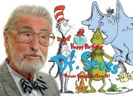

<h1>What is Dr. Seuss most famous for?<h1>

  <p><h3>Dr. Seuss is best known for his books to help children learn to read, such as One Fish Two Fish Red Fish Blue Fish, Green Eggs and Ham, and Hop on Pop.</p><h3>



<p>Green eggs and ham <a href="https://www.clear.rice.edu/comp200/resources/texts/Green%20Eggs%20and%20Ham.txt">story link</a>.</p>
